class: center <br> # Spatial Analysis of Urban Data ## Lecture and Tutorial: Urban Studies and Applied GIS [Bayi Li](mailto:barryli081@gmail.com) .toc-wrapper[ <div class="toc"> <a href="#urbanda" class="toc-item">Understanding the City Through Geospatial Data</a> <a href="#vis" class="toc-item">Advanced Visualisation and Mapping</a> <a href="#maup" class="toc-item">Modifiable Areal Unit Problem</a> </div> ] --- name: urbanda ### Computational urban science approaches <div align="center"> <figure> <p>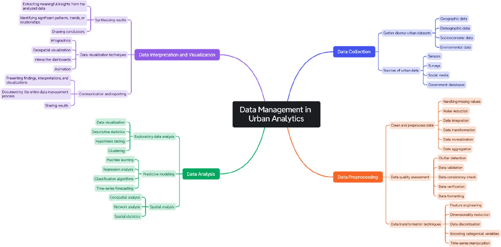</p> <figcaption>Approach for analysing trends of computational urban science and data science approaches.</figcaption> <figsubcaption>Source: doi.org/10.1007/s43762-024-00142-0</figsubcaption> </figure> </div> --- ## Data-driven Urbanism From <u>data analytics</u> to <u>modelling and simulation</u>, Singapore has built its urban planning practice around geospatial data. <div align="center"> <figure> <p>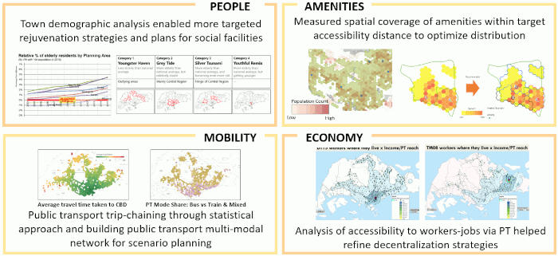</p> <figcaption>Urban Redevelopment Authority: Informing planning decisions with analytic insights.</figcaption> <figsubcaption>Source: https://www.ura.gov.sg/Corporate/Planning/Our-Planning-Process/Smart-Planning</figsubcaption> </figure> </div> Recommended reading: https://www.ura.gov.sg/-/media/Corporate/Resources/Ideas/MS-technologies/Research--Innovation-Strategy-Working-Paper_for-publish.pdf --- .right_half[ <figure> <p>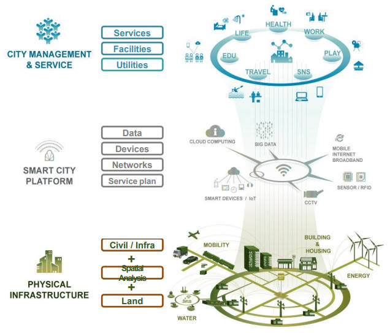</p> <figcaption>Smart City: Model</figcaption> <figsubcaption>Source: https://www.kdevelopedia.org/Resources/view/04201702080147173.do</figsubcaption> </figure> ] ## Data-driven Urbanism > Computation is now routinely being embedded into the fabric and infrastructure of cities producing a deluge of contextual and actionable data whichcan be processed and acted upon in real-time. > -- Rob Kitchin --- .right_half[ <figure> <p>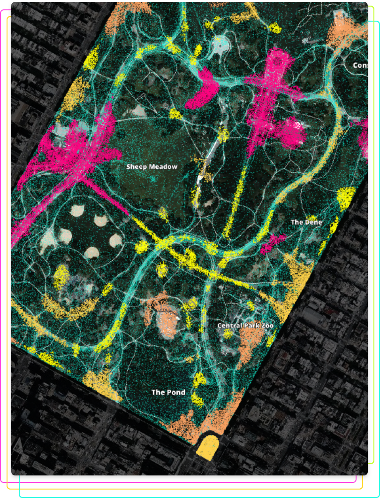</p> <figcaption>Using mobile GPS data in the NYC public parks.</figcaption> <figsubcaption>Source: https://carto.com/a-million-walks-in-the-park/</figsubcaption> </figure> ] ### GPS Data GPS data shows how people move and where they spend time. It helps planners see which public spaces attract visitors, how people travel to them, and where gaps in access or design may exist. <div align="center"> <figure> <p>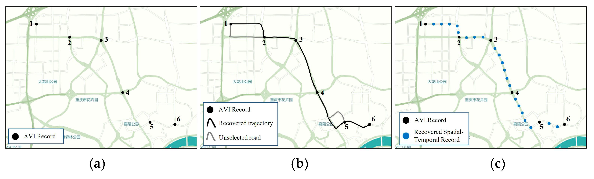</p> <figcaption>The process of trajectory reconstruction in a complex urban road scenario.</figcaption> <figsubcaption>Source: 10.3390/app142311340</figsubcaption> </figure> </div> --- ### Street-level / Eye-level Visual Data <div align="center"> <figure> <img src="imgs/applygis/svi_nus.webp" width="80%"> <figcaption>NUS Global Streetscapes.</figcaption> <figsubcaption>Source: https://ual.sg/project/global-streetscapes/</figsubcaption> </figure> </div> --- ### Visual Data Processing **Deep Learning Model** <div align="center"> <figure> <p>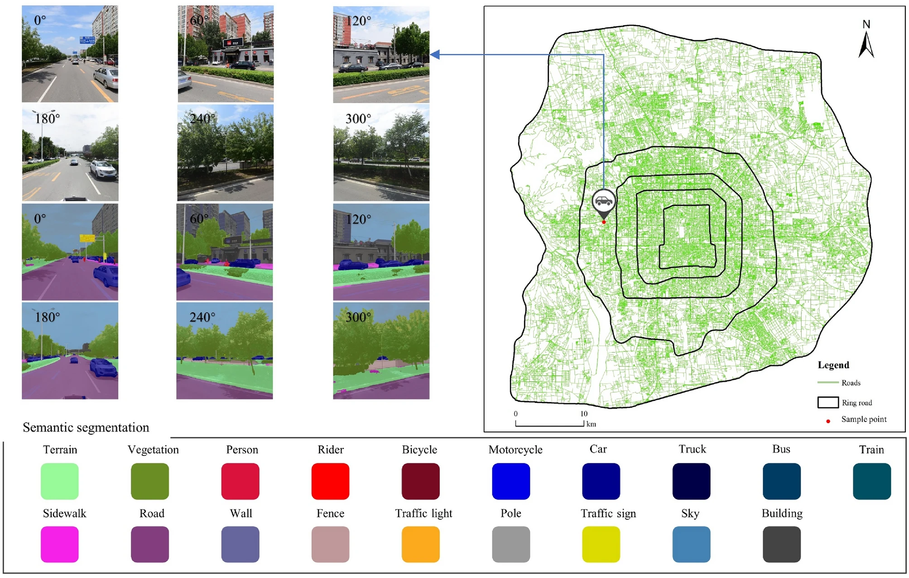</p> <figcaption>Street view images sampling and semantic segmentation.</figcaption> <figsubcaption>Source: 10.1038/s41598-024-81451-6</figsubcaption> </figure> </div> --- ### Visual Data Processing **Vision-Language Model** <div align="center"> <figure> <p>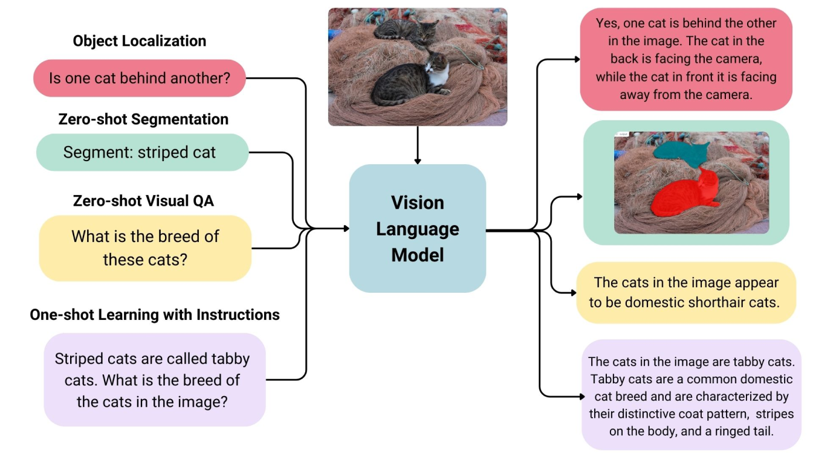</p> <figcaption>An example of the capabilities of a vision language model.</figcaption> <figsubcaption>Source: https://www.ultralytics.com/blog/understanding-vision-language-models-and-their-applications</figsubcaption> </figure> </div> --- ### Social Media Data .right_half[ <figure> <p>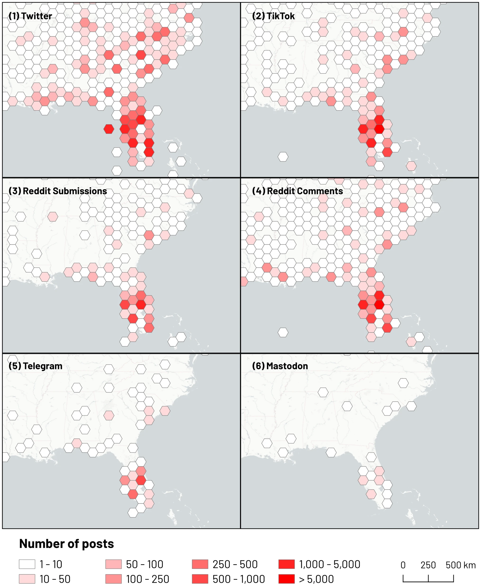</p> <figcaption>Spatial distribution of georeferenced posts</figcaption> <figsubcaption>Source: https://link.springer.com/article/10.1007/s13278-025-01494-z</figsubcaption> </figure> ] <div align="center"> <figure> <p>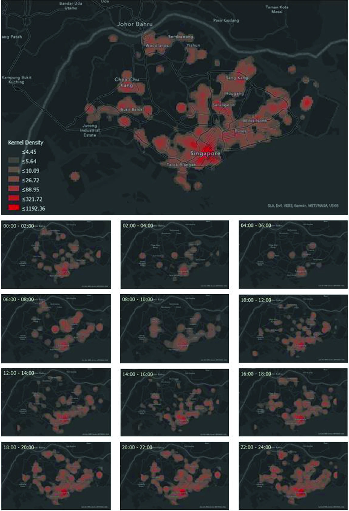</p> <figcaption>Kernel density of tweets during the entire study period.</figcaption> <figsubcaption>Source: 10.1007/978-981-16-7649-9_5</figsubcaption> </figure> </div> --- ### Social Media Data - Social Network Minning <div align="center"> <figure> <p>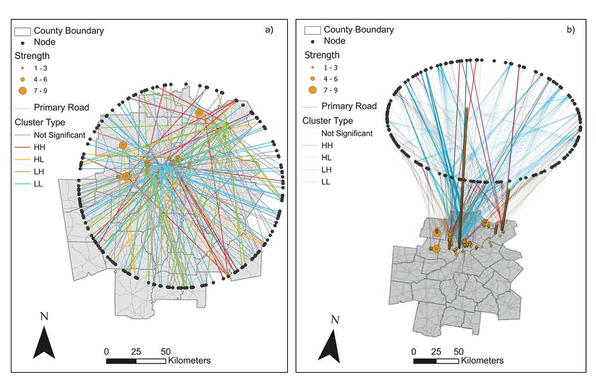</p> <figcaption>Visual exploration of human interactions in spatial-social dimensions.</figcaption> <figcaption>"Constructing and analyzing spatial-social networks from location-based social media data"</figcaption> <figsubcaption>Source: 10.1080/15230406.2021.1891974</figsubcaption> </figure> </div> --- name: vis ## Advanced Visualisation and Mapping ### Choropleth and Cartogram Cartogram is to reshape geographic units so they emphasise a specific logic rather than their exact physical form. It tries to keep adjacency and neighbourhoods, though some distortions still appear. <div align="center"> <figure> <p>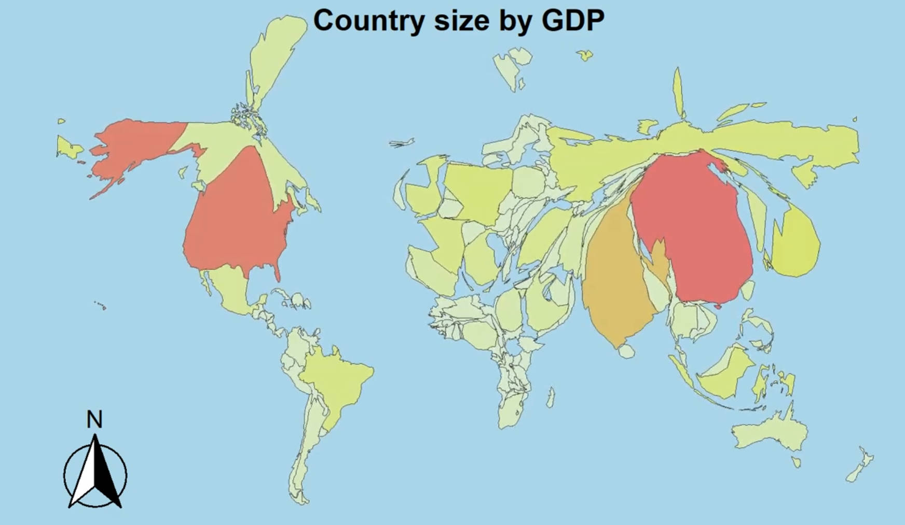</p> <figcaption>Countries by GDP PPP - Biggest Economies in the World - Data 1950-2022 | Cartogram.</figcaption> <figsubcaption>Source: https://www.youtube.com/watch?v=pvXrGgpBqSs</figsubcaption> </figure> </div> --- ## Advanced Visualisation and Mapping ### Choropleth and Cartogram The biggest advantage of using a cartogram is that it **removes the visual bias created by the actual size and shape of geographic areas**, allowing the reader to focus on the underlying data rather than the geography. Cartograms are used far more often in newspapers than in academic papers for better communication than spatial fidelity. <div align="center"> <figure> <img src="imgs/applygis/cartogram_example2.png" class="zoomable" width="45%"> <figcaption>US Presidential Election 2020 visualised by Choropleth and cartogram.</figcaption> <figsubcaption>Source: https://worldmapper.org/us-presidential-election-2020/</figsubcaption> </figure> </div> --- ### Tile map A tile map is <u>a variant of a cartogram</u>. Every unit takes on a simplified, standardised shape, often a square or a hexagon. Each tile has equal size, so visual weight is uniform across all units. This removes differences caused by actual land area and shifts attention to relationships, patterns and comparisons. <div align="center"> <figure> <p>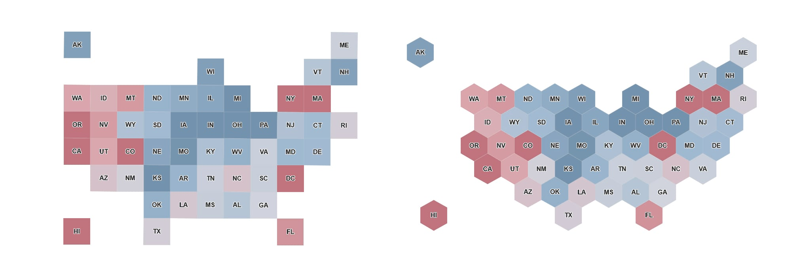</p> <figcaption>The same data visualized using a grid and hexagonal cartogram with slightly different arrangements of states.</figcaption> <figsubcaption>Source: https://www.esri.com/arcgis-blog/products/arcgis-online/mapping/how-to-build-a-cartogram-in-microsoft-office-and-arcgis-online</figsubcaption> </figure> </div> --- ### Dorling Cartogram It is a type of cartogram in which each geographic region is replaced by a circle. The size of the circle represents a chosen variable, and the circles are positioned so they roughly reflect the regions’ locations. <div align="center"> <figure> <p>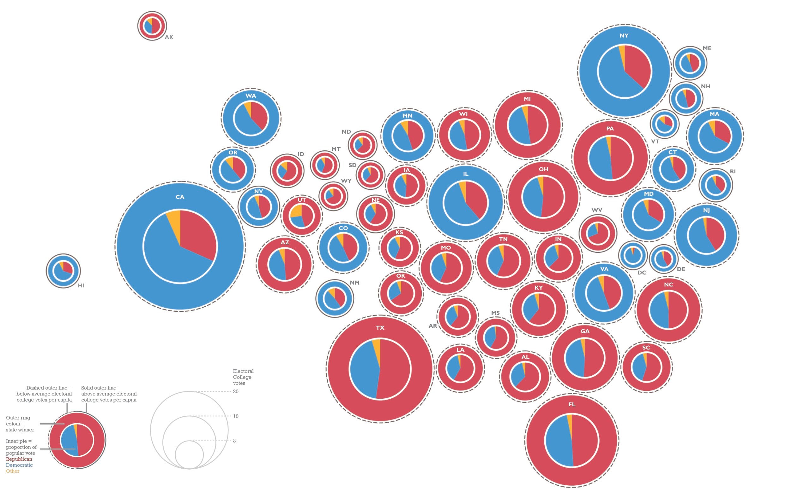</p> <figcaption>Congressional seats awarded to each state from the 2020 census.</figcaption> <figsubcaption>Source: https://www.esri.com/arcgis-blog/products/arcgis-pro/mapping/graphical-cartograms-in-arcgis-pro</figsubcaption> </figure> </div> --- ### Examples <div align="center"> <figure> <p>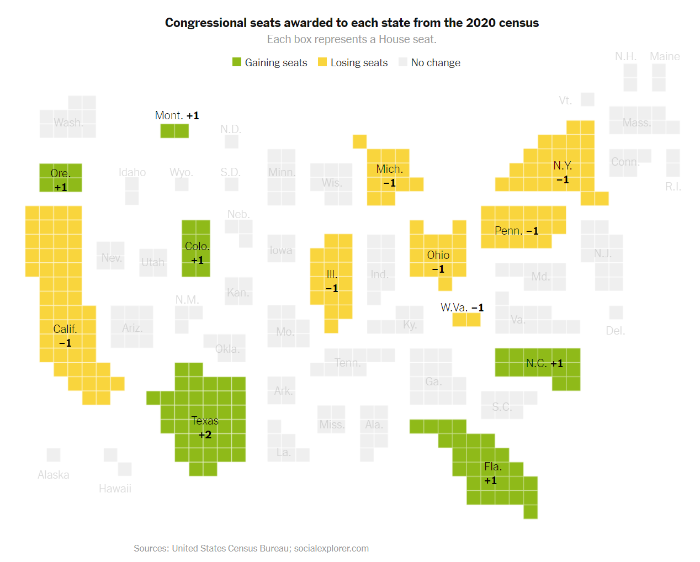</p> <figcaption>Congressional seats awarded to each state from the 2020 census.</figcaption> <figsubcaption>Source: https://www.nytimes.com/2021/10/21/learning/whats-going-on-in-this-graph-oct-27-2021.html</figsubcaption> </figure> </div> For example, [git@github.com:BayiLi081/Tile-map-cartogram.git](https://github.com/BayiLi081/Tile-map-cartogram) --- name: maup ## Modifiable Areal Unit Problem > A problem arising from the imposition of artificial units of spatial reporting on continuous geographical phenomena resulting in the generation of artificial spatial patterns > -- Heywood (1998) -- <div style="display: flex; justify-content: center; gap: 40px; align-items: flex-start;"> <!-- Scale effect --> <div> <p><b>Scale effect</b></p> <p>Zonal values change when the number of zones used to report the data changes.</p> <p>Variation seen at a finer scale (for example, enumeration districts) often decreases when the same data are aggregated into fewer, larger zones at a coarser scale (such as wards or counties).</p> <p>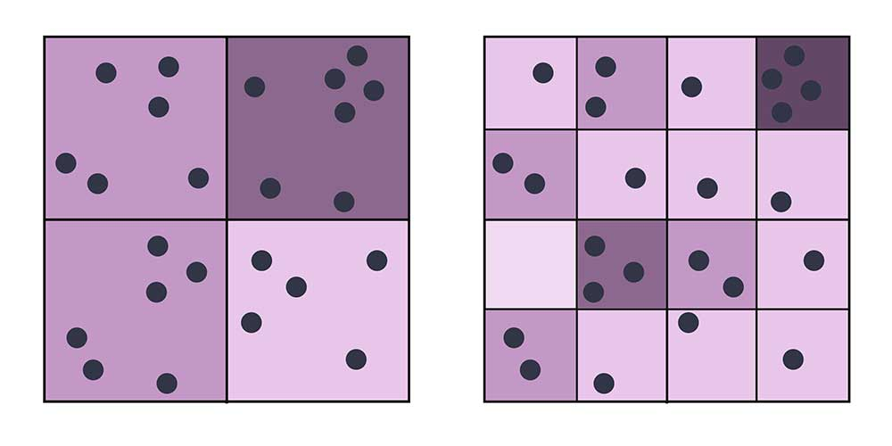</p> <figcaption>at different aggregation levels</figcaption> <figsubcaption>Source: https://gisgeography.com/maup-modifiable-areal-unit-problem/</figsubcaption> </div> <!-- Zonation effect --> <div> <p><b>Zonation effect</b></p> <p>Zonal values change because the geography of the zoning scheme shapes how data are aggregated. The same number of zones can be drawn in many different ways.</p> <p>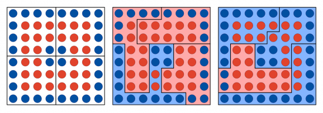</p> <figcaption>under different zoning schemes</figcaption> <figsubcaption>Source: https://gisgeography.com/maup-modifiable-areal-unit-problem/</figsubcaption> </div> </div> --- .right_half[ <figure> <p>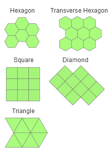</p> <figsubcaption>Source: https://pro.arcgis.com/en/pro-app/latest/tool-reference/data-management/generatetesellation.htm</figsubcaption> </figure> ] ### Addressing MAUP **Regular grid (tessellation) systems** Using grids (square or hexagon) avoids arbitrary administrative shapes and gives full control over the level of aggregation. Why it addresses both: Scale effect: you can vary grid size to test sensitivity. Zonation effect: grid geometry stays consistent, so shapes do not shift across areas. --- .right_half[ <figure> <figsubcaption>Source: https://pro.arcgis.com/en/pro-app/latest/tool-reference/data-management/generatetesellation.htm</figsubcaption> </figure> ] ### Addressing MAUP **Generating Regular grid with QGIS** Youtube tutorial: https://www.youtube.com/watch?v=ETk1pbGTen0 <div align="center"> <figure> <p>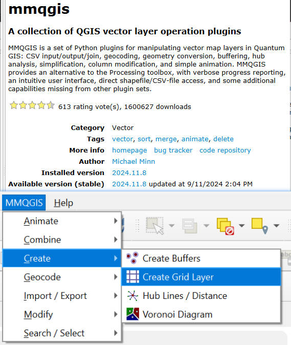</p> </figure> </div> --- .right_half[ <figure> <p>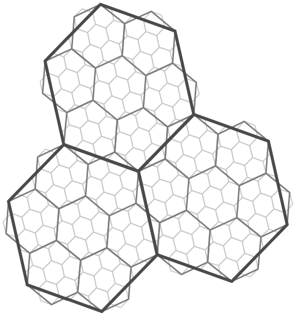</p> <figsubcaption>Source: https://www.esri.com/arcgis-blog/products/arcgis-online/analytics/use-h3-hexagons-for-spatial-analysis-in-arcgis-online</figsubcaption> </figure> ] **H3 Hexagon** H3 is a geospatial indexing system that **partitions the world** into hexagonal cells. Hierarchal hexagons are sized such that every larger polygon is divided into seven equal-sized smaller hexagons that all have an equal distance to the center of their neighbors. H3 is useful for **both visualisation and analysis**: reproducible workflows and scalable spatial processing. --- .right_half[ <figure> <p>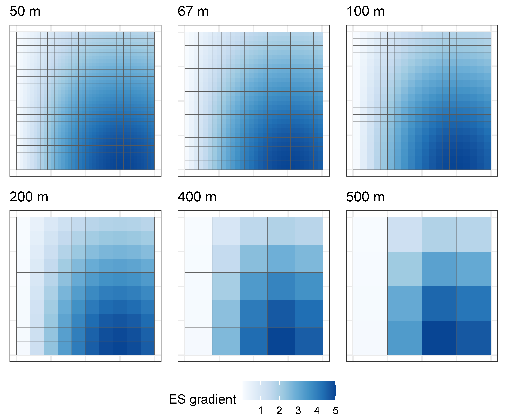</p> <figcaption>Examples of an ecosystem service gradient aggregated to different scales.</figcaption> <figsubcaption>Source: 10.3390/land11030399</figsubcaption> </figure> ] ### Addressing MAUP **Multi-scale, multi-zonation sensitivity analysis** Run the same model under: `several grid sizes` `several boundary systems (grids, administrative units, neighbourhood clusters)` `several randomised zonations` Why it works: It exposes how much results depend on both scale and boundary layout. If patterns remain stable across many configurations, findings are robust to MAUP. --- .right_half[ <figure> <p>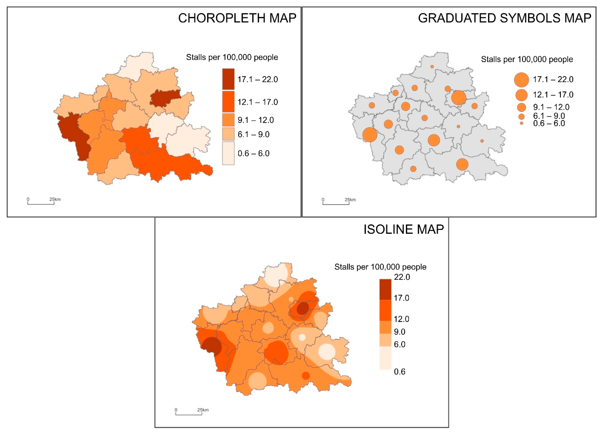</p> <figcaption>Choropleth map, graduated symbols map, and isoline map.</figcaption> <figsubcaption>Source: 10.3390/ijgi10020069</figsubcaption> </figure> ] ### Addressing MAUP **Continuous-surface modelling** KDE (Kernel Density Estimation) KDE surface can be visualised using isolines (right bottom). - Treats the phenomenon as continuous over space rather than forced into zones. - Reduces reliance on boundaries and zone sizes altogether. --- .right_half[ <figure> <p>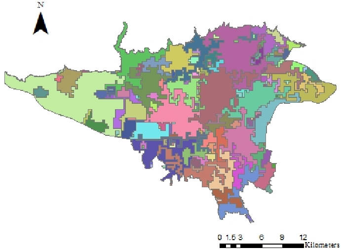</p> <figcaption>Result of Zone Design by spatial clustering with AZP algorithm.</figcaption> <figsubcaption>Source: 10.22034/soc.2019.84451</figsubcaption> </figure> ] ### Addressing MAUP **Optimised regionalisation (zone design algorithms)** AZP (Automatic Zoning Procedure) AZP is a heuristic method that searches for the best way to group contiguous spatial units into regions. It aims to minimise the within-region sum of squares, producing zones that are more homogeneous. - Produces zones that minimise internal heterogeneity and maximise external differences. - Works across different scales and reduces artefacts from arbitrary shapes. **Reference:** [Openshaw (1977)](https://lanselin.github.io/introbook_vol2/automatic-zoning-procedure-azp.html) --- ## Additional information for the final presentation **15 mins presentation + 5 mins Q&A** Key elements included: - Explain your main research question and why it matters. - Demonstrate how the group worked as a team. - Show your work process (from data to methodology). - Present the key spatial analyses, maps, and insights you developed. --- ## Additional information for the final presentation <div align="center"> <figure> </figure> </div> --- ## Additional information for the final report **Follow research paper format, but not a full paper** **Process screenshots are <U>NOT</U> required** Title page and references are not included in the page limits (6-8 pages) **Introduction** - the research question - why the topic matters **Literature Review** Summarise what others have found. **Data and Methodology** - data sources, - analysis methods, - tools and models used. --- ## Additional information for the final report **Results and Discussion** - tables, - charts, - maps. Explain what the results mean. And link back to the research question. **Conclusion** - the main answers, - what could be done next. Including your **Peer Assessment** here. **References** List all sources you cited. Use one citation style (APA, Harvard, Chicago). --- .right_half[ <figure> <p>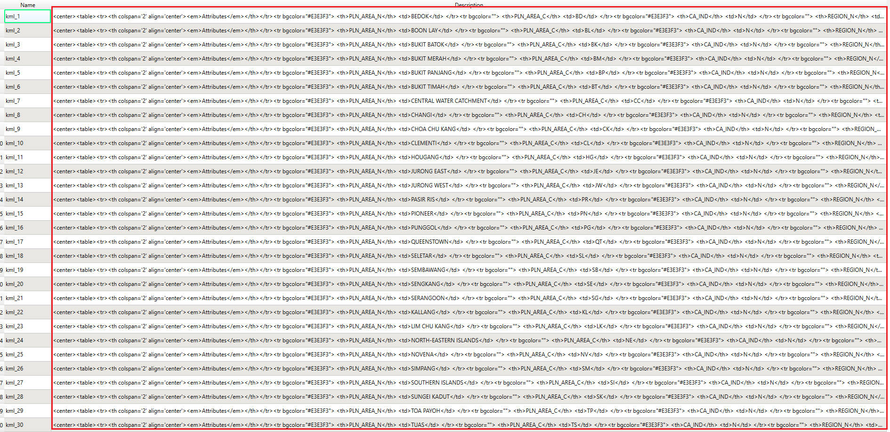</p> </figure> ] ## Data Preprocessing ### Geospatial data with HTML table The data creator configures a pop-up window for each feature: when you click on a polygon, a small HTML table appears showing key fields (PLN_AREA_N, REGION_N, etc.) in a nice formatted way. ```html <center><table><tr><th colspan='2' align='center'><em>Attributes</em></th></tr><tr bgcolor="#E3E3F3"> <th>PLN_AREA_N</th> <td>BEDOK</td> </tr><tr bgcolor=""> <th>PLN_AREA_C</th> <td>BD</td> </tr><tr bgcolor="#E3E3F3"> <th>CA_IND</th> <td>N</td> </tr><tr bgcolor=""> <th>REGION_N</th> <td>EAST REGION</td> </tr><tr bgcolor="#E3E3F3"> <th>REGION_C</th> <td>ER</td> </tr><tr bgcolor=""> <th>INC_CRC</th> <td>5F00E6FF084F3364</td> </tr><tr bgcolor="#E3E3F3"> <th>FMEL_UPD_D</th> <td>20191223152014</td> </tr></table></center> ``` --- .right_half[ <figure> </figure> ] ## Data Preprocessing ### Geospatial data with HTML table https://colab.research.google.com/ import the Python libraries: ```python import numpy as np import pandas as pd import geopandas as gpd ``` --- .right_half[ <figure> <p>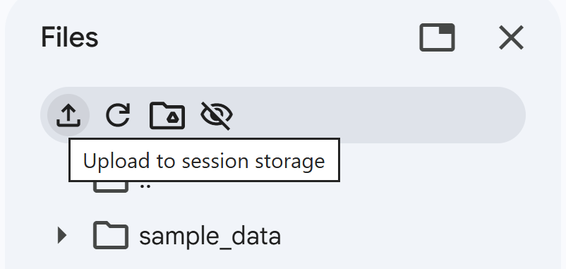</p> </figure> ] ### Upload data to Google colab Downloading the geojson from https://data.gov.sg/collections/2104/view and then upload it to colab ```python data_gdf = gpd.read_file("/content/MasterPlan2019PlanningAreaBoundaryNoSea.geojson") data_gdf.head() ``` --- ### Parsing the HTML value ```python def html_to_dict(html_text): t = pd.read_html(StringIO(f"<html>{html_text}</html>"))[0] t.columns = ["Attribute", "Value"] return dict(zip(t["Attribute"], t["Value"])) expanded = data_gdf["Description"].apply(html_to_dict).apply(pd.Series) clean_gdf = pd.concat([data_gdf.drop(columns=["Description"]), expanded], axis=1) clean_gdf.head() ``` --- ### Export it as cleaned GeoJSON ```python clean_gdf.to_file("/content/clean_MasterPlan2019PlanningAreaBoundaryNoSea.geojson", driver='GeoJSON') ``` --- .right_half[ <figure> <figcaption>https://github.com/BayiLi081/GIS-training</figcaption> </figure> ] Scan the QR code to open the repository with the materials for building this online slide deck: